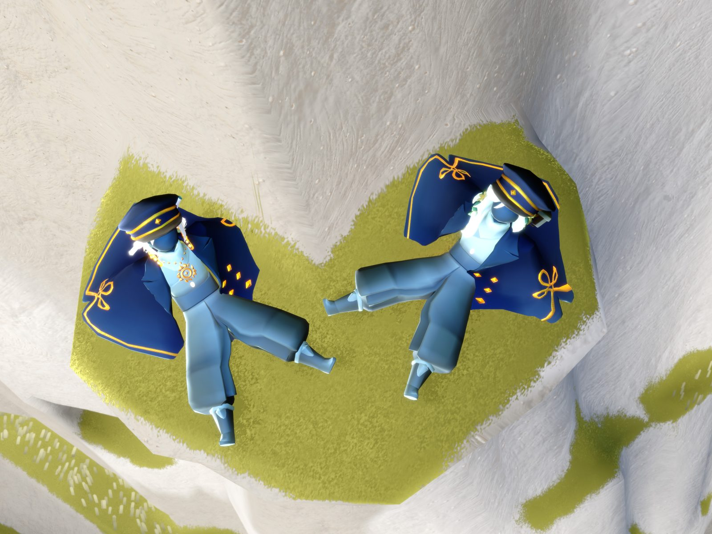

🌸
哈囉，這裡是 凜櫻雪。這份自介會慢慢更新，主要整理我的基本介紹、坑單、遊戲資訊和一些相處提醒。
💜 快速認識
- 稱呼
- 凜櫻雪／凜醬／凜／雪
- 性別
- 女
- 年齡
- 20–25，熟了再說準確數字
- MBTI
- INFP or INTP，I＆P 基本確定
🤝 相處小提醒
- 慢熟，是個大 I 人，不太會主動和陌生人聊天，但電波對到會開始嗨。
- 不喜歡和朋友起爭執，感覺快吵起來時可能會先閉嘴。
- 追星相關我會自行避雷，不貼臉基本沒問題。
- 語音的時候可能會不小心冒出髒話。
✨ 分頁導覽
🌸
這裡放比較私人的自介、坑單和相處提醒。慢熟但不是冷淡，熟起來可能會突然變得很多話。
📇 基本資料
- 名字
- 凜櫻雪
- 可用稱呼
- 凜醬／凜／雪，或你自己取一個不帶貶意的稱呼
- 性別
- 女
- 年齡
- 20–25，熟了再讓你知道準確數字
- MBTI
- INFP or INTP，總之 I 和 P 是確定的
- 興趣
- 遊戲、二次元、聽音樂
💭 喜好＆相處模式
- 不太會和陌生人聊天（不是高冷 rrr），是個大 I 人，但電波有對到的話可能會嗨起來。
- 不喜歡跟朋友起爭執，感覺快吵起來時可能會先閉嘴。
- 重度沉迷 GL，偶爾吃 BG（米家的不吃 BG），不吃 BL。
是米家雷電大姐姐的狗
🌙 我的個性
自認隨和
對不熟的人偏被動
情緒穩定
應該不算好聊
心情好時話很多
心情不好會自閉
⚠️ 我的雷點
- 追星（我會自行避雷，別貼臉就行）
- 情緒勒索
- 沒邊界感
- 角色拉踩
- 辱罵我推
- 沒禮貌
- 已讀不回
- 幾乎每一句後面都加驚嘆號
剩下的可能我自己也還沒完全發現。
🎮 遊戲坑
- 深坑
- 原神、崩壞：星穹鐵道、異環、光遇
- 退坑
- 鳴潮、絕區零
- 曾經玩過
- 崩壞3、PUBG 手機版、特戰英豪，應該還有，只是沒列出來
📺 動漫坑
其實這一兩年主要都是在玩遊戲，也很少看了，幾乎是淡掉了，但曾經深坑過的姑且先放在深坑欄位吧，目前大概也就柯南會每年都去看劇場版了。
深坑
- 名偵探柯南
- 主推灰原哀、萩原千速
- Re:從零開始的異世界生活
- 主推雷姆
- 間諜家家酒
- 主推約兒
- 葬送的芙莉蓮
- 主推費倫
- 鬼滅之刃
- 主推蝴蝶忍
淺坑
歡迎來到實力至上主義的教室
刀劍神域
無職轉生
關於我轉生變成史萊姆這檔事
五等分的花嫁
你的名字／天氣之子／鈴芽之旅
莉可麗絲
暗殺教室
政宗君的復仇
遊戲人生
工作細胞
青春豬頭少年不會夢到兔女郎學姐
進擊的巨人
應該還有，但目前想到的是這些。
🍃 非必要知道的小知識？
- 家裡因為宗教的關係，我從小就吃素，但自從高中變成叛逆的孩子之後，只要不在爸媽的眼皮下，幾乎都是想吃啥就吃啥。所以跟我出門吃飯就隨便吃，不需要為了我去什麼素食餐廳，
我可能也不想吃。但不喜歡吃辣（可以接受一點點辣）。
- 是女同，目前喜歡年上大姊姊？爸媽都不太能接受同性戀，沒意外的話幾年內應該是不會跟他們出櫃。
⚡
2021 年 4 月入坑，探索度目前全圖 100%。
📇 帳號資訊
- 名字
- 凜櫻雪
- 入坑時間
- 2021 年 4 月
- 探索度
- 全圖 100%
💜 推角
主推
雷電影
副推
八重神子
阿蕾奇諾
克洛琳德
茲白
瑪薇卡
哥倫比婭
桑多涅
💫 CP＆偏好
主要吃 鳴神組 ＆ 少偶。鳴神組攻受無所謂，少偶大部分吃少女攻；這兩對都不拆。
其他百合只要官方賣得明顯基本都吃。
🌌
開服玩家，這頁主要記錄帳號、限定角色、支援角與推角 CP。
📇 帳號資訊
- 名字
- 凜櫻雪
- 入坑時間
- 開服玩家
- 支援角色
- 黃泉／長夜月／緋英
💜 推角
主推
黃泉
塞飛兒
副推
翡翠
卡芙卡
飛霄
阿格萊雅
爻光
緋英
姬子
💫 CP＆偏好
主要吃 織竊 ＆ 巡憶。只吃阿雅＆黃泉攻，不接受逆＆拆。
其他 CP 像是海刻、芙姬也都吃，只是比較少。
🕯️
2021 年 10 月入坑，中間退坑又回坑，目前上線主要吃海膽＋饅頭和日任，有空就會去找小黑玩或者掛機。
📇 帳號資訊
- 備註
- 凜櫻雪
- 入坑／回坑
- 2021.10 入坑；2023.9 退坑；2025.8 回坑；2025.10 退坑；2026.6 回坑
- 帳號狀態
- 主要玩兩隻號，另有一隻無翼和三隻小號
- 翼數
- 目前兩隻號最高 12 翼，大約 210–220
- 身高
- 兩隻號目前都是 1 號
🤝 缺心可以找我互心。
📋 進度＆常用資訊
- 畢業季節
- 飛翔只有一隻號有季卡。深淵到歐若拉／雙星畢業，梵谷正在努力。
- 常駐髮型
- 杏花，偶爾也會換換其他的
- 友圈
- 3 個現友，其中 1 個不常上，另有 3～5 個網友
技能
暴風眼一二段直飛
土／風／火試煉速通
馴龍
幾乎全圖金人
金人因為中間退坑過，有幾個還不太熟。水試煉目前正在練習走捷徑。風試煉主要是兩隻號背背飛上去；風試煉想吃大蠟拿小金人需要解傳送，不然單人速通風試煉還不太熟練。
🕒 上線時間＆跑圖習慣
通常 下午＆晚上 上線。沒什麼事的話幾乎都是刷新開始跑，多半是吃海膽、聖島、雨林前半、吃饅頭、3 個試煉，這樣大概可以 15 蠟。
歡迎蹭圖？但我通常只跑以上地點和每日任務，大蠟圖看心情。

📌
點「複製」就能直接複製 UID／好友碼。光遇好友碼不定時更新。